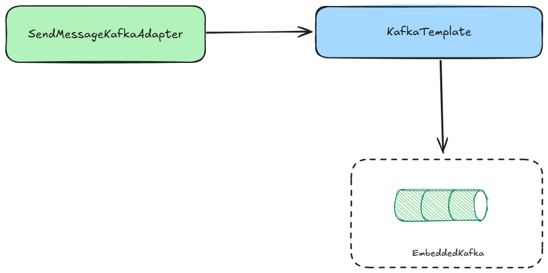

Integration Tests
Main goal
The primary goal of integration testing is to verify how an application interacts with external systems. For example, is the REST controller properly configured? Does the Kafka listener work as expected? Are the SQL queries executed correctly? Integration tests for both incoming and outgoing adapters help provide answers to these questions.
Main concepts
Test Slices
As integration tests only verify the incoming and outgoing adapters, we don't need to start the entire application context—only the classes and configurations required for specific tests. This approach speeds up test execution. The Spring Boot framework provides multiple test slice annotations to help achieve this. All available test slices can be found in the documentation.
Outgoing adapters
Database adapters
Integration tests for database adapters allow us to verify:
- If custom queries are correctly constructed and return the expected results.
- The accuracy of the Hibernate model and its mappings.
- The correctness of database migrations (for example, those performed using Flyway).
It is important to run these tests using the same type of database as is used in production. This can be easily achieved with the help of the Testcontainers library, which allows spinning up a real database instance (such as PostgreSQL) in a Docker container during test execution.
Why not with in-memory db like H2?
While it may be tempting to use an in-memory database like H2 for tests because it is easy to set up, this approach can lead to issues as the project grows. Eventually, you may need to use features that are available in your production database but not supported by H2. This can result in inconsistent behavior and the need to add workarounds or separate migrations just for test purposes. Such incompatibilities can lead to tests passing locally but failing in production. In contrast, Testcontainers are also straightforward to configure and run quickly, eliminating the need for H2.
However, in-memory databases can be a good option during the early stages of a project when the choice of a production database has not yet been finalized and you want to delay this decision.
Below is an example of an integration test for a database adapter. This test checks whether an entity is correctly inserted into the database. The test runs against a real PostgreSQL instance provided by Testcontainers.
class ParticipantPostgresAdapterTestIT extends PostgresTestIT {
@Autowired private ReservationParticipantRepository repository;
private ParticipantPostgresAdapter adapter;
@BeforeEach
void setup() {
adapter = new ParticipantPostgresAdapter(repository);
}
@Test
void shouldInsertParticipant() {
// given
ReservationParticipant participant = ReservationParticipantTestFactory.create();
// when
adapter.insert(participant);
// then
StatisticAssertions.assertThat(statistics).hasQueryCount(1).hasInsertCount(1);
ReservationParticipantEntity savedParticipant =
repository.findByIdentifier(IDENTIFIER).orElseThrow();
assertThat(savedParticipant.getFirstName()).isEqualTo(FIRST_NAME);
assertThat(savedParticipant.getSurname()).isEqualTo(SURNAME);
}
}
And PostgresTestIT which is a template from postgres database adapters tests.
@DataJpaTest
@AutoConfigureTestDatabase(replace = AutoConfigureTestDatabase.Replace.NONE)
abstract class PostgresTestIT {
protected static final PostgreSQLContainer<?> postgreSQLContainer =
new PostgreSQLContainer<>(DockerImageName.parse("postgres:latest"));
static {
postgreSQLContainer.start();
}
@DynamicPropertySource
static void registerProperties(DynamicPropertyRegistry registry) {
registry.add("spring.datasource.url", postgreSQLContainer::getJdbcUrl);
registry.add("spring.datasource.username", postgreSQLContainer::getUsername);
registry.add("spring.datasource.password", postgreSQLContainer::getPassword);
}
@Autowired private SessionFactory sessionFactory;
protected Statistics statistics;
@BeforeEach
void enableStatistics() {
statistics = sessionFactory.getStatistics();
statistics.clear();
statistics.setStatisticsEnabled(true);
}
}
This test also verifies Hibernate statistics to ensure that the entity is mapped and managed efficiently. Monitoring these statistics helps detect issues such as the N+1 query problem or other problems related to Hibernate entity configuration.
Why data are not cleaned up after the test?
Since @DataJpaTest ensures that the entire test runs within a single transaction, all changes made during
the test are rolled back after the test completes. Therefore, manual cleanup is not necessary.
However, in some cases, this behavior of @DataJpaTest may not be desirable. To disable transactional behavior
for a specific test, you can use the annotation @Transactional(propagation = Propagation.NOT_SUPPORTED) to
suspend the transaction created by the @DataJpaTest annotation.
AMQP adapters

Integration tests for AMQP adapters ensure that messages are correctly sent to message brokers, such as Kafka or RabbitMQ.
Is it worth performing such tests?
If the message-sending logic is straightforward, these integration tests can often be omitted; verification is then
typically covered with module tests.
However, if the logic includes more complex scenarios or multiple conditions, integration
tests become valuable to ensure that the adapter interacts with the broker as intended.
Integration testing of a Kafka-based AMQP adapter is exemplified below:
class SendMessageKafkaAdapterTestIT extends KafkaTestIT {
private SendMessageKafkaAdapter adapter;
@BeforeEach
void setup() {
adapter = new SendMessageKafkaAdapter(template, objectMapper);
}
@Test
void shouldSendMessage(EmbeddedKafkaBroker embeddedKafkaBroker) {
// given
Room room = new Room(new RoomIdentifier("178caccd-d9cd-4e35-886d-2fc6e19f8ed5"), 5);
Reservation reservation = createReservation(room);
room.reserve(reservation);
// when
adapter.send(room, reservation);
// then
String messageContent = getMessageFromTopic(embeddedKafkaBroker, "roomReserved");
JsonAssert.comparator(JsonCompareMode.STRICT)
.assertIsMatch(
"""
{
"roomIdentifier":"178caccd-d9cd-4e35-886d-2fc6e19f8ed5",
"reservationIdentifier":"14c9caff-cdae-46b9-9448-86fa2ee7bfd1",
"startTime":[2025,6,23,10,0],
"endTime":[2025,6,23,12,0]
}
""",
messageContent);
}
}
abstract base class for Kafka Integration tests:
@EmbeddedKafka(kraft = true)
abstract class KafkaTestIT {
protected final ObjectMapper objectMapper = createObjectMapper();
private final KafkaConfiguration kafkaConfiguration = new KafkaConfiguration();
protected KafkaTemplate<String, String> template;
@BeforeEach
void prepareKafkaTemplate(EmbeddedKafkaBroker embeddedKafkaBroker) {
embeddedKafkaBroker.addTopics(kafkaConfiguration.roomReservedTopic());
Map<String, Object> producerProps = KafkaTestUtils.producerProps(embeddedKafkaBroker);
ProducerFactory<String, String> producerFactory =
new DefaultKafkaProducerFactory<>(producerProps);
template = new KafkaTemplate<>(producerFactory);
}
protected String getMessageFromTopic(EmbeddedKafkaBroker embeddedKafkaBroker, String topic) {
Map<String, Object> consumerProps =
KafkaTestUtils.consumerProps("testT", "false", embeddedKafkaBroker);
DefaultKafkaConsumerFactory<String, String> cf =
new DefaultKafkaConsumerFactory<>(consumerProps);
Consumer<String, String> consumer = cf.createConsumer();
embeddedKafkaBroker.consumeFromAnEmbeddedTopic(consumer, topic);
return KafkaTestUtils.getSingleRecord(consumer, topic).value();
}
private static ObjectMapper createObjectMapper() {
ObjectMapper objectMapper = new ObjectMapper();
objectMapper.registerModule(new JavaTimeModule());
objectMapper.registerModule(new Jdk8Module());
return objectMapper;
}
}
This test uses the @EmbeddedKafka annotation provided by Spring Boot
(documentation).
This approach is suitable for verifying message publication without requiring access to a real broker.
Considerations:
- Configuration Duplication - One drawback to using
@EmbeddedKafkais the requirement to manually configure topics and Kafka-related beans in the test context. The test environment does not automatically inherit configuration from the production code. - Alternative: Testcontainers - As an alternative to
@EmbeddedKafka, Testcontainers may be used to spin up a real Kafka broker in a Docker container. This approach more closely replicates production conditions. - Test Scope: - When leveraging Testcontainers, there is a choice between starting the entire Spring context (which may negatively impact test performance) and initializing only the necessary beans or configurations required for AMQP integration testing.
Incoming Adapters
Web Adapters
The goal of the incoming web adapters integration test is to check:
- Endpoint Configuration: Verify that endpoints are correctly mapped and accessible at the intended URLs.
- Request/Response Handling: Ensure that the controller accurately interprets incoming requests and that responses have the correct status codes, headers, and body content.
- Validation and Error Handling: Check that invalid input triggers appropriate error responses.
- Authorization (if applicable): Confirm that secured endpoints enforce proper authentication and authorization rules.
Example of a test:
@WebMvcTest
class ReserveRoomRestControllerTest {
private static final ReservationIdentifier RESERVATION_IDENTIFIER =
new ReservationIdentifier("a674fc0c-0d74-469d-beaa-266dd98b921c");
private static final String ROOM_IDENTIFIER = "0fd6c5e5-ff2c-4b7a-aa06-2a6581d0fe9b";
@Autowired
private MockMvc mockMvc;
@MockitoBean
private ReserveRoomUseCase useCase;
@Test
void shouldReserveRoom() throws Exception {
// given
given(
useCase.reserve(
assertArg(
command -> {
assertThat(command.reservationOwnerIdentifier().value())
.isEqualTo(ReservationParticipantTestFactory.IDENTIFIER_AS_STRING);
assertThat(command.roomIdentifier().value()).isEqualTo(ROOM_IDENTIFIER);
assertThat(command.period()).isEqualTo(createPeriodBetween(11, 15));
assertThat(command.numberOfParticipants()).isEqualTo(7);
})))
.willReturn(RESERVATION_IDENTIFIER);
// when
ResultActions resultActions = performRequest(getJsonRequestBody());
// then
resultActions
.andExpect(status().isCreated())
.andExpect(jsonPath("$.reservationIdentifier").value(RESERVATION_IDENTIFIER.value()));
}
}
In the test, MockMvc is used, which sets up Spring with only the beans related to the web layer, such as controllers,
controller advice, and filters. It does not start up a real web server; instead, it mocks request and response objects.
The main purpose of these tests is to verify your application's web layer configuration, not the internal behavior of
the Spring framework.
How to test error handling?
If an exception is thrown in controller logic (for example, during command autovalidation or built-in Spring
validation of a request), the solution is straightforward—it should be tested with an integration test. However,
exceptions thrown within use case logic can be more challenging to handle.
Typically, error handling is externalized from controllers using ControllerAdvice in Spring. There are two main
approaches:
- Write an integration test: Because @WebMvcTest includes ControllerAdvice beans, you can write integration tests that cover error handling logic` The advantage of this approach is that test execution is generally faster than a full module test. However, the downside is that if the use case no longer throws the exception (e.g., the logic is removed), it is easy to forget to remove the related test from the controller integration tests.
- Write a module test: This approach has two main drawbacks: significantly longer execution time, and a potentially more complex test setup. However, if the use case stops throwing the exception, the module test will fail, making it easier to detect such changes and keep your tests up to date.